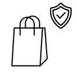

第一章 出國前代辦清單 #
在確認錄取通知後，將會陸續收到學校通知，也會有許多重要的代辦事項1。來美國前需要籌備的東西包括：簽證、機票、整理攜帶物品、健康檢查以及規劃租屋。這些重要文件中，I-20（或DS-2019）以及護照中的學生簽證在畢業之前會緊密陪伴在留學生身邊2。未來的出入入境、銀行開戶等等都會用到這些文件，請務必小心保管。這些重要文件中，I-20（或DS-2019）以及護照中的學生簽證在畢業之前會緊密陪伴在留學生身邊。未來的出入入境、銀行開戶等等都會用到這些文件，請務必小心保管。
這些重要文件中，I-20（或DS-2019）以及護照中的學生簽證在畢業之前會緊密陪伴在留學生身邊。未來的出入入境、銀行開戶等等都會用到這些文件，請務必小心保管。
1.3 簽證 #
最後更新日期2020.05.15
以下敘述為F1與J1簽證申請。大致步驟可以參考美國在台協會網頁。不建議面簽後一個月內規劃出國，以免遇上行政審查而無法出國。
線上填寫DS-160 #
至線上系統填寫，填寫完後列印出確認頁。主要填寫所需文件資訊：
-
有效期限內的護照
-
申請學校核發的I-20
-
符合美簽規格（5x5公分）的照片電子檔
-
在美國的住宿地址、電話
2.3 校外租屋 #
吳紀葶、林青億協編 | 最後更新日期2020.05.15
台灣學生校外租大多落於North Oakland、Shadyside、Squirrel Hill，為本篇主要介紹的三個區域。尋找房子，超市、藥妝店分布及交通是相當重要的考量因素。另外，學期間Pitt、CMU白天有提供校車、CMU晚上提供Escort校車（行駛時間6:30 pm~6:30 am）。
圖1 Pitt與CMU鄰近常見公車路線與（a）超市1及藥妝店、（b）公寓分佈
4.3.2 三大電信公司 #
 |
 |
 |
|
|---|---|---|---|
| 平均訊號滿意度 | 1 | 2 | 3 |
| 訊號覆蓋率 | 1 | 2 | 3 |
| 費用（貴） | 1 | 2 | 3 |
| 網路技術 | CDMA | GSM | GSM |
5.3.2 無信用紀錄新手卡 #
有些是開戶後Branch申請，有些則可以網路申請，有些則需要SSN。無SSN不要亂填SSN申卡，盜用SSN是聯邦重罪。以下均無年費信用卡：
 |
BoA Cash Rewards：無須SSN，須開戶後Branch申請5。現金回饋卡，自行指定一類別3%回饋（通常推薦線上購物），超市、大賣場2%，其他1%。使用Visa6通道，提供初中階卡7如延長保固等。 |
|---|---|
 |
Discover it：須SSN，網申，用他人Referral連結有額外開卡獎勵8。現金回饋卡，季度限定消費5%回饋，其他1%。無國際交易手續費9。第一年消費所有回饋x2。每年送$20（GPA > 3.0）。使用Discover通道10，除現金回饋外，未提供其他福利。 |
C. 福利 #
信用卡提供延長保固、購物保險、租車保險，高階卡亦旅遊險、免費機場貴賓室等，初階信用卡常見福利：
 |
延長保固 Extended Warranty 持卡人透過信用卡全額購買具有保固的商品時，發卡機構會提供額外1倍保固時間 |
|---|---|
|  | 購物保障 Purchase Protection 持卡人透過信用卡購買的商品損壞 |
Reference
-
https://www.rainn.org/statistics/campus-sexual-violence#:~:text=Women%20Ages%2018%2D24%20Are%20at%20an%20Elevated%20Risk%20of%20Sexual%20Violence&text=Among%20undergraduate%20students%2C%2026.4%25%20of,force%2C%20violence%2C%20or%20incapacitation.&text=5.8%25%20of%20students%20have%20experienced%20stalking%20since%20entering%20college. ↩︎